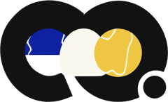
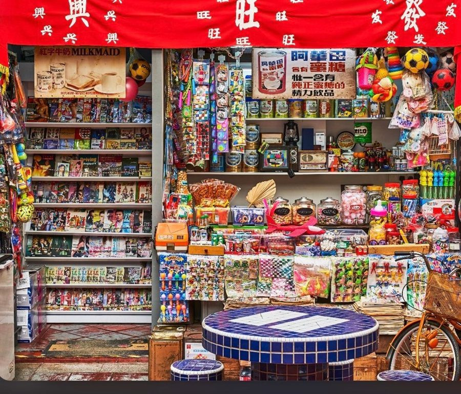
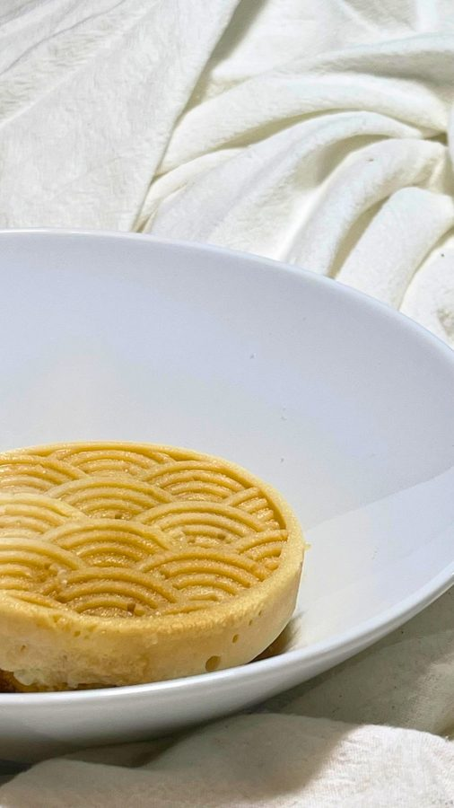
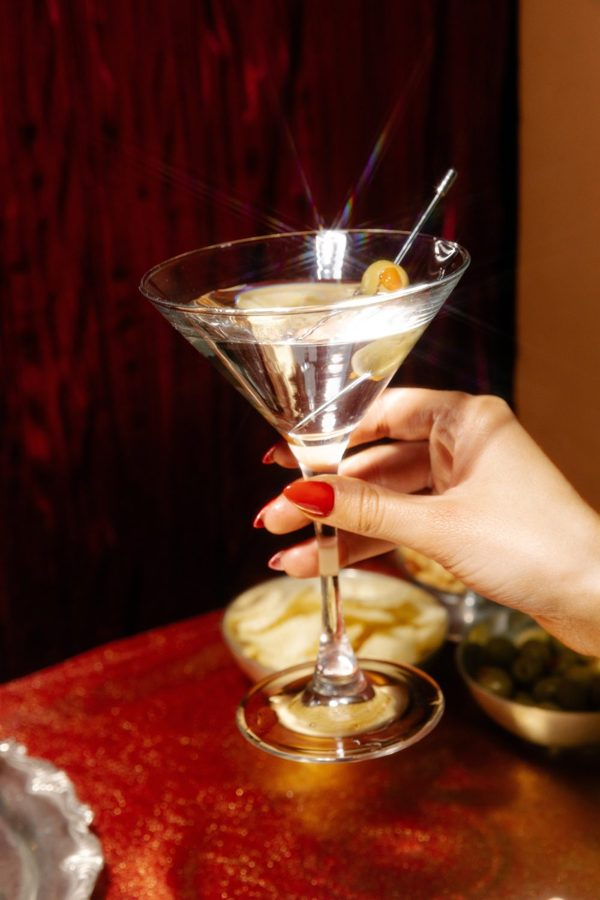
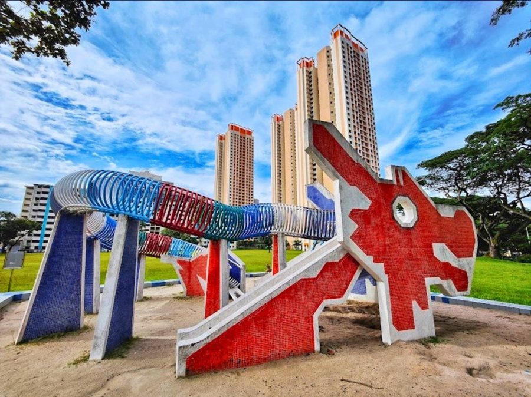

/ˌeɪ.tiˈsɪks/ · verb · kitchen slang

4 pax. Small celebrations or gatherings where everyone gets to relive their childhood snacks in a new way.
560per session

Best for first timers who want to meet new people and trauma-share over desserts we grew up on. Together.
148per pax

"Kosong" means zero. Zero alcohol in for a 3 non-alcoholic pairing. BYOB are always welcome.
38add-on per pax

Local slang for "as one pleases." 5 courses by chef selection. Savoury or sweet — your choice.
118per pax
“Moving forward, the techniques I'm hoping to explore and execute are going multi-cultured, expanded by the community, for the community. I'm trashing the standard template for a fluid, non-binary culture approach to dessert. No strict boundaries, just what works.”— ewan
yishun · one HDB kitchen · the neighbourhood season
eightysix is a traditional dining room centralized to the pitch. It offers technical pâtisserie made in an HDB — a fluid, non-binary dessert experience, resulting in the Neighbourhood Menu.
It's about damn time we trashed the standard restaurant template — no rigid rules, no artificial warmth — leaving only culinary curiosity, expanded by the community, for the community.
Expect changes in the dessert's texture and flavour pairing, but it still retains the original snack's idea occasionally, because creativity never stops.
When the childhood-snack season ends, the menus turn. Six seasons — reflecting Singapore's ethnic groups. More about culture than about race.
The classic. Childhood snacks — Twisties, Hawthorn Flakes, Ice Kacang — reinterpreted as technical, plated fine dining. See the full menu ↑
The kuih table, kampung sweets, gula melaka territory — pulled apart and rebuilt with pâtisserie technique. R&D starts when the Neighbourhood season closes.
Tang yuan, white rabbit, pasar malam sugar work — the Chinese sweet canon, taken seriously on a plate.
Payasam, jalebi, the Little India spice rack — dessert logic from the subcontinent, rebuilt in an HDB kitchen.
Nyonya kueh, pandan, coconut, blue pea — the culture that already refused boundaries before I did.
Rojak means mix. Every season before it, collided. No strict boundaries, just what works.
The short version: it's one person, one kitchen, and every no-show is ingredients in the bin. Here's how we keep it fair.
Full payment is encouraged. A 50% deposit at checkout secures your seat.
Bookings open 21 days in advance. Bookings close 12 hours before dinner so I can prepare the food.
Need to reschedule? You get one penalty-free reschedule, no matter how much notice you give. Need to reschedule again after that? The cancellation terms below kick in.
Deposits are forfeited if you cancel within 24 hours of your session. This covers wasted ingredients and helps keep the lights on.
Please arrive on time. A 15-minute grace period is allowed before the first course is served.
Share any dietary requirements or allergies when you book — not after. Common allergens include dairy, gluten, nuts, soy, and seafood. I'll confirm what I can accommodate before your session.
This is a home-based kitchen in a private residence — by booking, you're accepting that. Every dish is made with care, but I can't 100% guarantee zero cross-contamination. I'll accommodate disclosed allergies to the best of my ability — final call on what's safe for you to eat is yours.
I document sessions (photo/video) for eightysix's social media and marketing. By attending, you're okay with appearing in that content. Let me know before your session if you'd rather not be filmed or photographed, and I'll work around it.